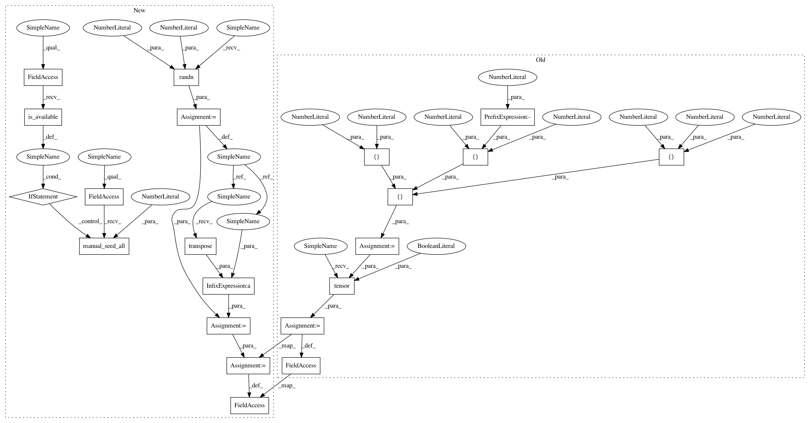

91b0d220c8e816766fd4565e1d2f5115d3afbefe,test/functions/test_inv_quad_log_det.py,TestInvQuadLogDetBatch,setUp,#TestInvQuadLogDetBatch#,115
Before Change
self.rng_state = torch.get_rng_state()
torch.manual_seed(1)
mats = [[[3, -1, 0], [-1, 3, 0], [0, 0, 3]], [[10, -2, 1], [-2, 10, 0], [1, 0, 10]]]
self.mats_var = torch.tensor(mats, dtype=torch.float, requires_grad=True)
self.mats_var_clone = self.mats_var.clone().detach().requires_grad_(True)
self.vecs_var = torch.randn(2, 3, 4, requires_grad=True)
self.vecs_var_clone = self.vecs_var.clone().detach().requires_grad_(True)
def tearDown(self):
After Change
if os.getenv("unlock_seed") is None or os.getenv("unlock_seed").lower() == "false":
self.rng_state = torch.get_rng_state()
torch.manual_seed(1)
if torch.cuda.is_available():
torch.cuda.manual_seed_all(1)
random.seed(1)
mats = torch.randn(5, 4, 4)
mats = mats @ mats.transpose(-1, -2)
mats.div_(5).add_(torch.eye(4).unsqueeze_(0))
vecs = torch.randn(5, 4, 6)
self.mats = mats.detach().clone().requires_grad_(True)
self.mats_clone = mats.detach().clone().requires_grad_(True)
self.vecs = vecs.detach().clone().requires_grad_(True)
self.vecs_clone = vecs.detach().clone().requires_grad_(True)
def test_inv_quad_log_det_many_vectors(self):
In pattern: SUPERPATTERN
Frequency: 3
Non-data size: 21
Instances
Project Name: cornellius-gp/gpytorch
Commit Name: 91b0d220c8e816766fd4565e1d2f5115d3afbefe
Time: 2018-10-12
Author: gpleiss@gmail.com
File Name: test/functions/test_inv_quad_log_det.py
Class Name: TestInvQuadLogDetBatch
Method Name: setUp
Project Name: cornellius-gp/gpytorch
Commit Name: 91b0d220c8e816766fd4565e1d2f5115d3afbefe
Time: 2018-10-12
Author: gpleiss@gmail.com
File Name: test/functions/test_root_decomposition.py
Class Name: TestRootDecomposition
Method Name: setUp
Project Name: cornellius-gp/gpytorch
Commit Name: 91b0d220c8e816766fd4565e1d2f5115d3afbefe
Time: 2018-10-12
Author: gpleiss@gmail.com
File Name: test/functions/test_inv_matmul.py
Class Name: TestInvMatmulBatch
Method Name: setUp
Project Name: cornellius-gp/gpytorch
Commit Name: 91b0d220c8e816766fd4565e1d2f5115d3afbefe
Time: 2018-10-12
Author: gpleiss@gmail.com
File Name: test/functions/test_inv_quad_log_det.py
Class Name: TestInvQuadLogDetBatch
Method Name: setUp